Hi!
I am Emre, and I am an ML engineer at The Rockefeller University. My research is focused on signal processing, computer vision, and fundamental ML/DL. I have 5+ years of experience with end-to-end ML/DL including experiment design, real-world dataset curation, preprocessing, DL model design and training, evaluation, and deployment. I have also worked with signal processing and ML/DL applications of various sensors including FMCW radars, RGB-D/IR cameras, ECG, and iEEG. I am passionate about computer vision, health sensing, and fundamental ML research.
Education
- Ph.D. in Electrical and Computer Engineering, The University of Alabama, Tuscaloosa, AL, USA (2019-2024)
- B.Sc. in Electrical and Electronics Engineering, Koc University, Istanbul, Turkey (2018)
Technical Skills
Work Experience
The Rockefeller University
Machine Learning Engineer II | July 2024 - Present
- Self-supervised learning for neuron tracking from extracellular neural recordings.
- Contactless respiration and heart beat monitoring using radar.
- Multi-camera data acquisition with Basler and FLIR cameras.
NXP
Machine Learning Intern | May 2023 - Aug 2023
- Neural Architecture Search (NAS) on radar point cloud classification model.
- Automotive sensor (Radar & Camera) data visualization via AVS.
Google Summer of Code (GSoC), ML4SCI
Machine Learning Intern | May 2021 - Aug 2021
- Graph Neural Networks for Particle Momentum Estimation in the CMS Trigger System.
Aselsan
Military Computer Design Engineering Intern | Jun 2018 - Jul 2018
- Worked on embedded systems programming with the peripherals of PIC32MX (ADC, Timer, UART, I2C etc.) in C.
Acrome Robotics
Production Intern (Volunteer) | Feb 2018 - Mar 2018
- Assembled and calibrated robotics parts used in lab lectures (e.g., Delta Robot, Ball Balancing Table).
Honeywell
Process Solutions Intern | Aug 2017 - Sep 2017
- Designed operator panels of distributed control systems.
Research Experience
University of Alabama | Computational Intelligence for Radar Lab
Graduate Research Assistant | 2019 - 2024
- Sign language-controlled Chess game with synchronous multi-modal (Video + RF) data acquisition and prediction. [Paper]
- Experiment design and raw data acquisition with multiple FMCW MIMO radars including:
- TI's IWR1443, AWR1642, AWR2243 single and cascade chips
- Infineon's BGT60TR13C, XeThru X4
- RGB-D sensors including (Kinect v2, Orbbec, Basler, FLIR).
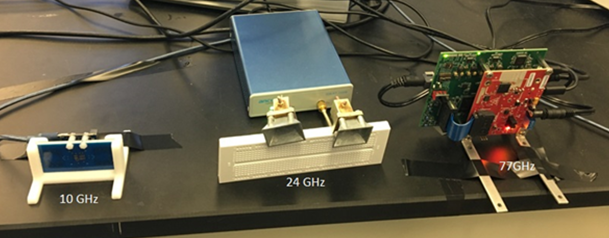 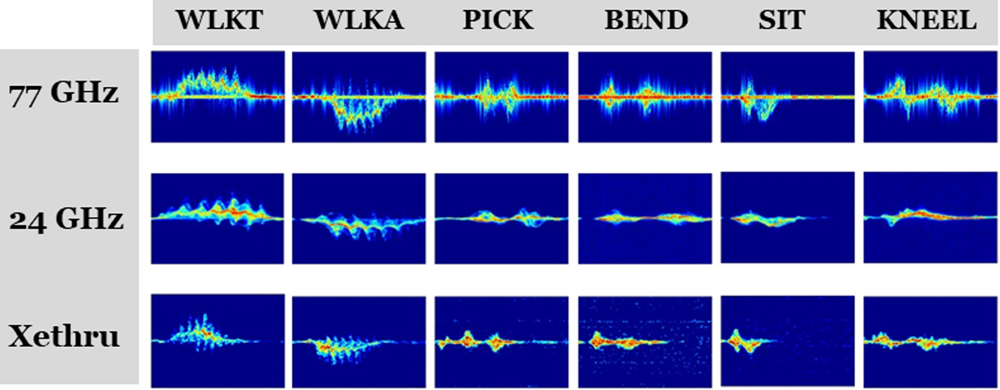 - Designed Graphical User Interface (GUI) for simultaneous data acquisition from multiple sensors. [Code]
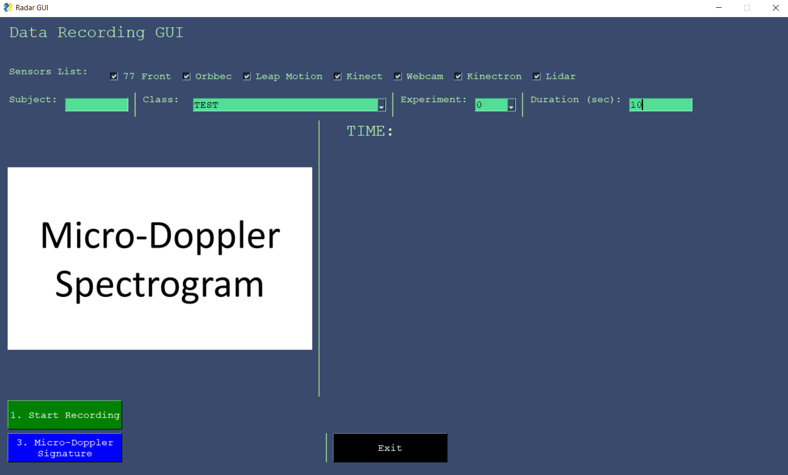 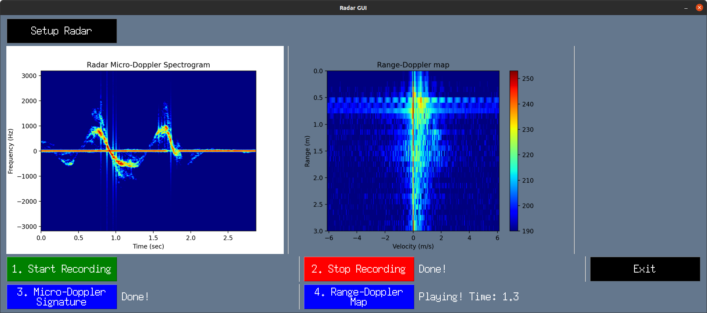 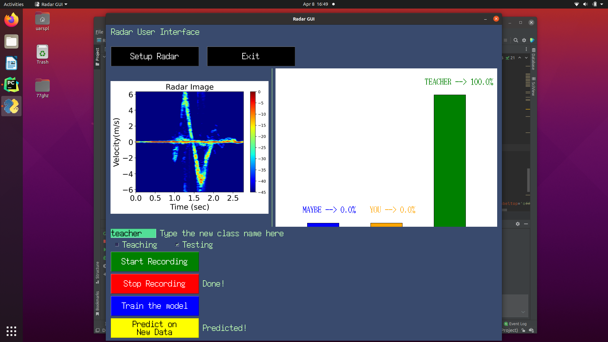
- Developed FMCW MIMO radar simulation with 250+ stars on GitHub. [Report] [Code]
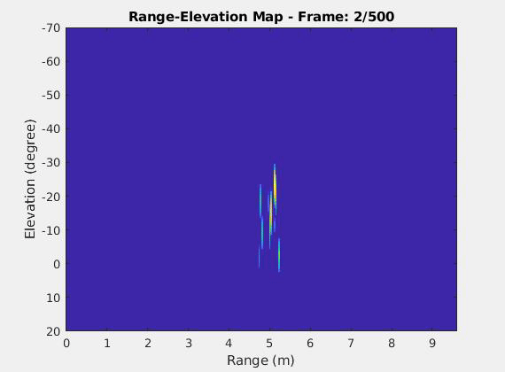 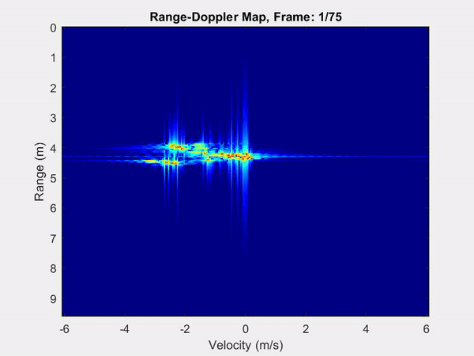
- Real-time processing and classification of RF data.
- Automated temporal segmentation and sequential classification of RF data. [Paper] [Code]
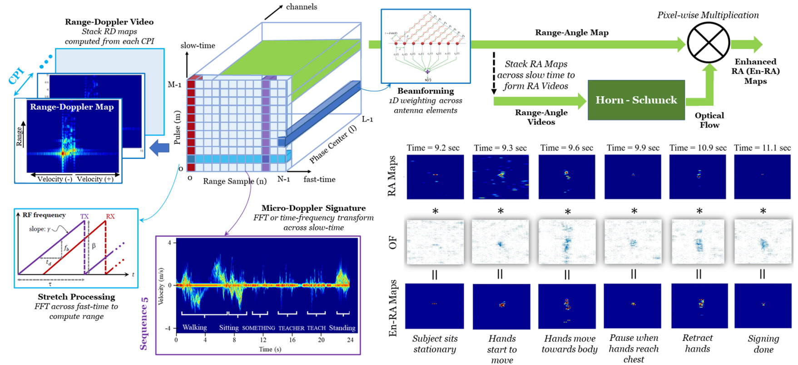 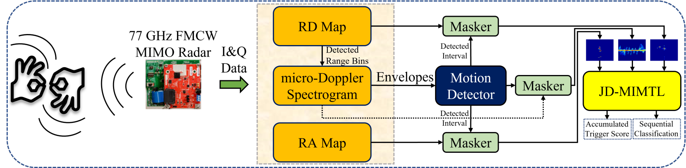 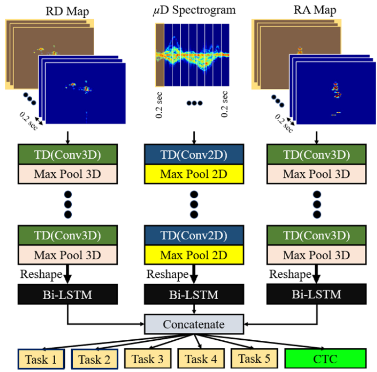
- Researched deep neural network and Graph Neural Network design for ASL recognition with radar.
- Body and hand skeleton extraction and registration using RGB-D sensors.
- Subspace projection-based multi-target resolution [Paper] [Code]
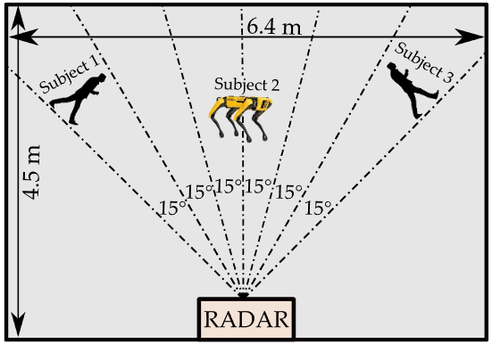 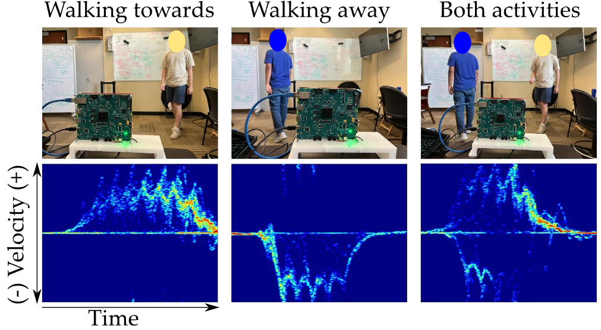 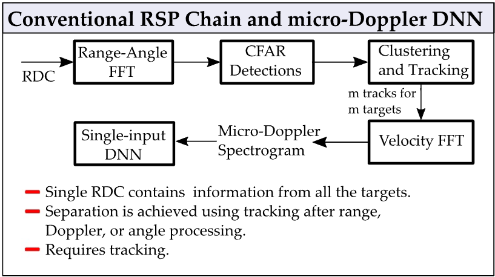 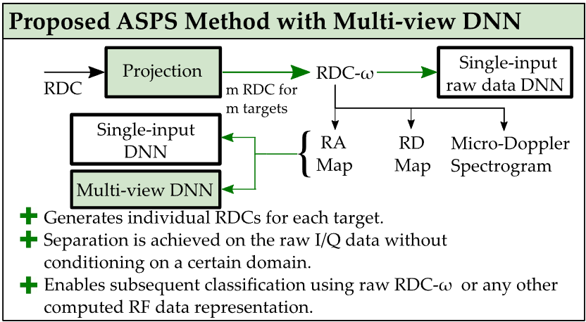 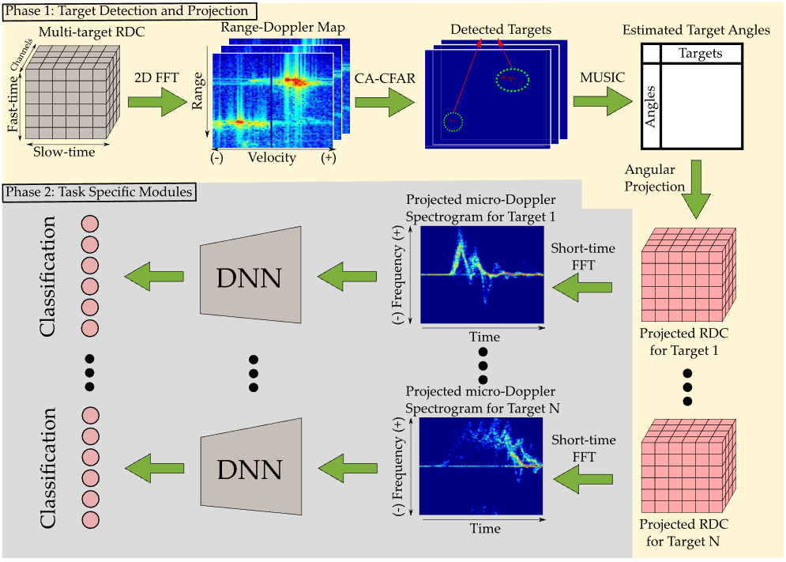 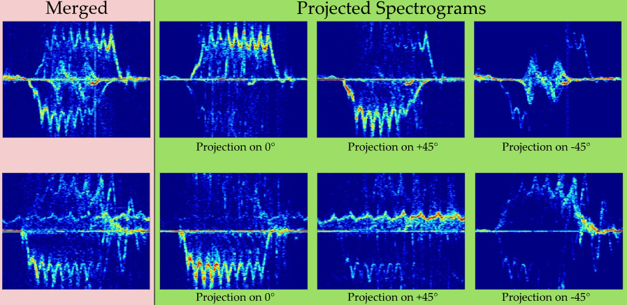
Publications
Journals
SZ. Gurbuz, AC. Gurbuz, EA. Malaia, DJ. Griffin, C. Crawford, E. Kurtoglu, et al., "American Sign Language Recognition Using RF Sensing," in IEEE Sensors Journal, 2020.
SZ. Gurbuz, MM. Rahman, E. Kurtoglu, et al., "Multi-Frequency RF Sensor Fusion for Word-Level Fluent ASL Recognition," in IEEE Sensors Journal, 2021.
Emre Kurtoglu, AC. Gurbuz, Evie Malaia, Darrin Griffin, Chris Crawford, and Sevgi Z. Gurbuz, "ASL Trigger Recognition in Mixed Activity/Signing Sequences for RF Sensor-Based User Interfaces," in IEEE Transactions on Human-Machine Systems, 2021.
Sevgi Z. Gurbuz, Emre Kurtoglu, M. Mahbubur Rahman, Dario Martelli, "Gait variability analysis using continuous RF data streams of human activity" in Smart Health, 2022.
Evie A. Malaia, Joshua D. Borneman, Emre Kurtoglu, Sevgi Z. Gurbuz, Darrin Griffin, Chris Crawford, and Ali C. Gurbuz. "Complexity in sign languages". Linguistics Vanguard, 9(s1):121-131, 2023.
Emre Kurtoglu, Sabyasachi Biswas, AC. Gurbuz and Sevgi Z. Gurbuz, "Boosting multi-target recognition performance with multi-input multi-output radar-based angular subspace projection and multi-view deep neural network" in IET Radar, Sonar & Navigation, 2023.
Emre Kurtoglu, Kenneth DeHaan, Caroline Kobek Pezzarossi, Darrin J. Griffin, Chris Crawford, and Sevgi Z. Gurbuz, "Interactive Learning of Natural Sign Language with Radar" in IET Radar, Sonar & Navigation, 2024.
Emre Kurtoglu, and Sevgi Z. Gurbuz, "Human-Centered Fully-Adaptive Radar for Gesture Recognition in Smart Environments" in IEEE Transactions on Human-Machine Systems, 2025. (Accepted)
Conference Proceedings
SZ. Gurbuz, AC. Gurbuz, EA. Malaia, DJ. Griffin, C. Crawford, E. Kurtoglu, et.al. "A Linguistic Perspective on Radar Micro-Doppler Analysis of American Sign Language", IEEE Radar Conference, 2020.
SZ. Gurbuz, MM. Rahman, TF. Macks, E. Kurtoglu, "Cross Frequency Training with Adversarial Learning for Radar micro-Doppler Signature Classification", in Proc. SPIE, Defense + Commercial Sensing Symposium, Radar Sensor Technology XXIV.
SZ. Gurbuz, AC. Gurbuz, EA. Malaia, DJ. Griffin, C. Crawford, E. Kurtoglu, et al., "ASL Recognition Based on Kinematics Derived from a Multi-Frequency RF Sensor Network", in IEEE Sensors Conference, 2021.
E. Kurtoglu, AC. Gurbuz, EA. Malaia, DJ. Griffin, C. Crawford, SZ. Gurbuz, "Sequential Classification of ASL Signs in the Context of Daily Living Using RF Sensing", in IEEE Radar Conference, 2021.
M. Mahbubur Rahman, E. Kurtoglu, R. Mdrafi, A.C. Gurbuz, E. Malaia, C. Crawford, D. Griffin, S.Z. Gurbuz, "Word-level ASL Recognition and Trigger Sign Detection with RF Sensors", in Proc. IEEE ICASSP, 2021.
Oladipupo O. Adeoluwa, Sean J. Kearney, Emre Kurtoglu, Charles J. Connors, and Sevgi Z. Gurbuz "Near real-time ASL recognition using a millimeter wave radar", Proc. SPIE 11742, Radar Sensor Technology XXV, 1174218 (26 April 2021).
M. M. Rahman, E. Kurtoglu et al., "Performance Comparison of Radar and Video for American Sign Language Recognition," in IEEE Radar Conference (RadarConf22), 2022, pp. 1-6.
S. Z. Gurbuz, E. Kurtoglu et al., "ASL Recognition Based on Kinematics Derived from a Multi-Frequency RF Sensor Network," in IEEE SENSORS, 2020, pp. 1-4.
E. Kurtoğlu, et al., "RF Micro-Doppler Classification with Multiple Spectrograms from Angular Subspace Projections," in IEEE Radar Conference (RadarConf22), 2022, pp. 1-6. (Best student paper finalist - alternate)
Emin Ucer, E. Kurtoglu, et al., "Local detection of oltc operation to support decentralized control of active end-nodes". In 2022 IEEE Power & Energy Society General Meeting (PESGM), pages 1-5, 2022.
Sevgi Z. Gurbuz, M. Mahbubur Rahman, E. Kurtoglu, and Dario Martelli. "Continuous human activity recognition and step-time variability analysis with fmcw radar". In 2022 IEEE-EMBS International Conference on Biomedical and Health Informatics (BHI), pages 01-04, 2022.
Sevgi Z. Gurbuz, Chris Crawford, Darrin J. Griffin, Emre Kurtoglu, et al., "Interactive rf game design for deciphering real-world human motion: Activities, gestures, and sign language". In 2023 IEEE Radar Conference (RadarConf23), pages 1-6, 2023.
Emre Kurtoğlu, Sultanus Salehin, Moeness G. Amin, Sevgi Z. Gurbuz, "RF sensing of personalized mobility: accounting for temporal variability in ethogram-based classification," Proc. SPIE 13048, Radar Sensor Technology XXVIII, 130480Q (2024).
E. Kurtoğlu, M. G. Amin and S. Z. Gurbuz, "Radar Based Joint Human Activity and Agility Recognition via Multi Input Multi-Task Learning," 2024 IEEE Radar Conference (RadarConf24), Denver, CO, USA, 2024, pp. 1-6. (Runner Up Award)
Emre Kurtoğlu, et al. "Ethogram-Based Personalization of Human Activity and Agility from Radar micro-Doppler Signatures," 2024 IEEE EMBS International Conference on Biomedical and Health Informatics (BHI) (2024).
Sevgi Z. Gurbuz, and Emre Kurtoğlu "Gesture-based Human-in-the-Loop Interaction with Fully-Adaptive Radar," IEEE International Radar Conference (RADAR) (2025).
Kenneth DeHaan, Emre Kurtoğlu, et al. RF-ChessSIGN: Radar-enabled Human-Computer Interaction in a Real-Time Sign Language-Controlled Game," International Conference on Computer Vision (ICCV) (2025). (Under Review)
Honors & Awards
Best Student Paper Competition Finalist (Runner Up)
IEEE Radar Conference, 2024
Best Student Paper Competition Finalist-Alternate
IEEE Radar Conference, 2022
UA Graduate Council Fellowship
University of Alabama Graduate School, 2021-2022
National University Entrance Exam Full Tuition Scholarship
Gediz University, 2014
Invited Talks
UCL Radar Group
University College London (2024)